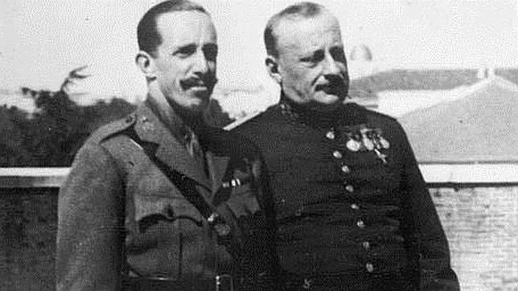
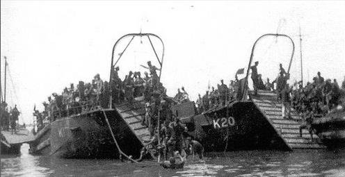
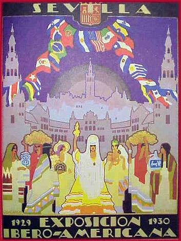
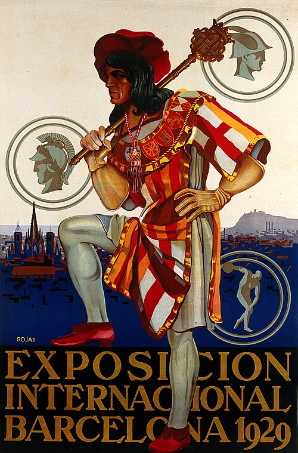
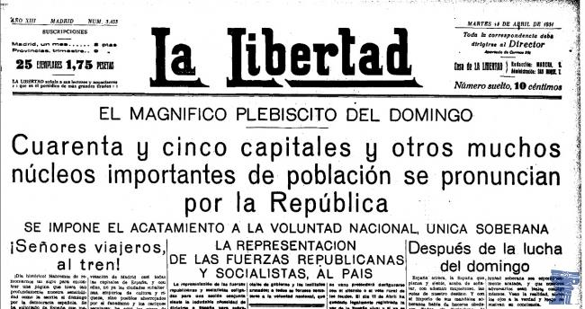
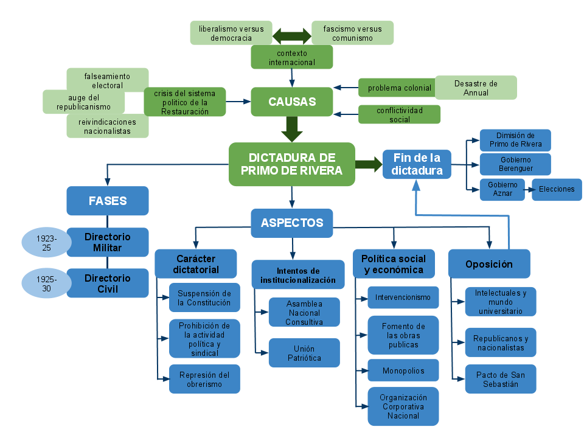

Tema 2: La Dictadura y Fin de la Restauración (1923 - 1931)
La clausura del parlamentarismo constitucional, el reformismo autoritario de los años veinte, el auge de la oposición y el derrumbe final de la institución monárquica.

Imagen: El rey Alfonso XIII y el general Miguel Primo de Rivera junto a los generales del directorio militar tras tomar posesión de sus cargos (1923)1. El Golpe de Estado de 1923 y el Directorio Militar (1923 - 1925)
El 13 de septiembre de 1923, el capitán general de Cataluña, Miguel Primo de Rivera, encabezó un pronunciamiento militar que derribó al gobierno constitucional sin apenas resistencia y ante la indiferencia o aprobación tácita de la opinión pública.Mediante su célebre Manifiesto a la Nación y al Ejército, justificó la insurrección bélica como una intervención de urgencia para "liberar a la Patria de los profesionales de la política", erradicar el caciquismo, poner fin al pistolerismo urbano y atajar la descomposición del Estado provocada por el informe del Expediente Picasso sobre Annual.
El rey Alfonso XIII, favorable a una salida autoritaria ante la debilidad parlamentaria y temeroso de las revelaciones del Expediente Picasso sobre Marruecos, sancionó inmediatamente el golpe entregándole la jefatura del Gobierno.
Durante la primera fase de la dictadura, conocida como el Directorio Militar (1923-1925), el dictador gobernó como ministro único asistido por un consejo de ocho generales de brigada y un contraalmirante. Se ponía fin de un plumazo a casi cincuenta años de parlamentarismo constitucional de la Restauración. Las principales medidas represivas adoptadas para restablecer el orden público fueron:
- Suspensión de las garantías constitucionales: La Constitución de 1876 quedó en suspenso, se disolvieron el Congreso y el Senado y se instauró una estricta censura en la prensa escrita y el correo privado.
- Militarización administrativa: Se destituyó a todos los ayuntamientos y diputaciones provinciales, sustituyendo a los gobernadores civiles por jefes militares y entregando la dirección de los municipios a juntas de vocales nombradas a dedo entre los mayores contribuyentes.
- Persecución del obrerismo revolucionario: Se persiguió y declaró fuera de la ley a los partidos comunistas y a la CNT anarquista, forzándolos a la clandestinidad, mientras que el PSOE y la UGT mantuvieron una actitud de neutralidad y colaboración tácita inicial con el régimen.
- Control de los nacionalismos periféricos: Se persiguió férreamente al nacionalismo vasco y catalán. Se prohibió el uso público de la lengua catalana, la sardana y la senyera, y se decretó la disolución de la Mancomunidad de Cataluña en 1925, calificando al regionalismo de idéntico al separatismo.
🗳️ La Farsa del Partido Único: La Unión Patriótica
Para intentar legitimar y dar una base social al nuevo régimen autoritario, Primo de Rivera fundó en 1924 la Unión Patriótica (UP), un partido único de carácter personalista y corporativo. Carecía de programa ideológico definido y se fundamentaba en los principios católicos y de unidad nacional. Como milicia armada ciudadana auxiliar de apoyo a las fuerzas de seguridad, se extendió a todo el país el Somatén Nacional, un cuerpo paramilitar cívico armado integrado por ciudadanos propietarios encargado de custodiar el orden público en pueblos y villas en auxilio de la Guardia Civil y que llegó a agrupar a más de 200.000 burgueses y propietarios voluntarios armados.
¿Quieres analizar de cerca los acontecimientos del pronunciamiento de 1923 y el funcionamiento de su gobierno autoritario?
🎬 Vídeo complementario: Ver extractos históricos de la Dictadura de Primo de Rivera ➡️2. La Pacificación de Marruecos: El Desembarco de Alhucemas (1925)
El gran éxito popular y político de la dictadura fue la resolución definitiva del problema marroquí, que desangraba las finanzas y la juventud del país desde principios de siglo. Aunque Primo de Rivera se había manifestado inicialmente partidario del abandono del protectorado africano, la presión de los coroneles africanistas (como Francisco Franco o Sanjurjo) y la audacia del líder rifeño Abd-el-Krim le llevaron a planificar una ofensiva militar.

Imagen: Operaciones de desembarco de tropas españolas en la bahía de Alhucemas en septiembre de 1925Al extender Abd-el-Krim la guerrilla rifeña a la zona del protectorado francés, España y Francia firmaron una alianza estratégica militar. El 8 de septiembre de 1925 se ejecutó el histórico Desembarco de Alhucemas. Se trató de una operación conjunta hispano-francesa a gran escala, la primera de la historia que coordinó fuerzas de tierra, mar y aire de forma planificada.
La operación fue un éxito total. La resistencia de las cabilas rifeñas fue pulverizada y Abd-el-Krim terminó rindiéndose a las tropas francesas en 1926. La pacificación de la zona restauró el honor herido del Ejército, reconcilió al régimen con las clases populares campesinas y los inversores burgueses, e impulsó la inmensa popularidad del dictador.
3. El Directorio Civil y el Auge Intervencionista (1925 - 1930)
Aprovechando su momento de máxima popularidad, Primo de Rivera sustituyó en diciembre de 1925 el Directorio Militar por el Directorio Civil, incorporando a destacados tecnócratas civiles como José Calvo Sotelo en el Ministerio de Hacienda o Eduardo Aunós en Trabajo, con el claro propósito de perpetuarse en el poder institucionalizando la dictadura.
Para institucionalizar su poder de forma duradera, el dictador convocó en 1927 una Asamblea Nacional Consultiva integrada por miembros corporativos de la Unión Patriótica y la administración pública. La asamblea elaboró en 1929 un proyecto de Constitución autoritaria y corporativa que anulaba la soberanía popular, aunque no llegó a promulgarse por el rechazo de la oposición republicana y conservadora.
Beneficiándose de la excelente coyuntura económica internacional de los felices años veinte, la dictadura puso en marcha un ambicioso programa de fomento industrial e infraestructuras, caracterizado por una fuerte nacionalización e intervencionismo estatal:
- El plan de obras públicas: Se construyeron más de 5.000 kilómetros de carreteras, se ampliaron y renovaron las vías férreas y se crearon las Confederaciones Hidrográficas para el aprovechamiento agrario e hidroeléctrico de las cuencas fluviales mediante canales y embalses.
- Grandes monopolios del Estado: Se crearon monopolios nacionales para centralizar la recaudación y los servicios estratégicos: la Compañía Arrendataria del Monopolio de Petróleos (CAMPSA), la Compañía Telefónica Nacional de España (CTNE), Tabacalera y la Lotería Nacional, acumulando una deuda pública considerable.
- Paz laboral forzada: Se creó la Organización Corporativa Nacional, un sindicato de Estado integrado por patronos y obreros en comités paritarios que actuaban bajo el arbitraje del Estado, reduciendo de forma drástica las huelgas y desterrando el derecho de huelga. El ala mayoritaria del PSOE (liderada por Largo Caballero) colaboró estrechamente con estas instituciones corporativas, frente a la oposición minoritaria de Indalecio Prieto.
📍 La División Provincial de Canarias de 1927 y el Cambullón
Durante la etapa del Directorio Civil, la dictadura de Primo de Rivera abordó la resolución definitiva del conflicto administrativo territorial del archipiélago canario. El 21 de septiembre de 1927, Primo de Rivera firmó el histórico Real Decreto de División Provincial de Canarias, el cual dividió a las islas en dos provincias independientes: la provincia de Las Palmas (Gran Canaria, Fuerteventura y Lanzarote) y la provincia de Santa Cruz de Tenerife (Tenerife, La Palma, La Gomera y El Hierro).
Esta medida zanjó de forma duradera el enconado pleito insular por la capitalidad única decretada en 1833. Paralelamente, la actividad portuaria y comercial marítima,siguió, creciendo en Las Palmas el fenómeno social del cambullón (el trueque y comercio flotante de mercancías realizado por una actividad informal, marginal o estraperlista no regulada, protagonizada por boteros e intermediarios independientes que subían a los barcos mercantes extranjeros a espaldas de la aduana para cambiar carbón, frutas, artesanía y productos locales por tabaco, alcohol, telas, comida o divisas.).

Imagen: Plaza de España de Sevilla construida para la Exposición Iberoamericana de 1929
Imagen: Palacios oficiales de Montjuïc construidos para la Exposición Universal de Barcelona de 1929Para celebrar el éxito económico del régimen y ensalzar la modernización nacional, la dictadura organizó dos inmensos escaparates internacionales: la Exposición Iberoamericana de Sevilla y la Exposición Universal de Barcelona en 1929, que culminaron el boom material de los años veinte en España.
4. La Decadencia del Régimen y el Crecimiento de la Oposición
A partir de 1928, el fracaso en el intento de institucionalizar el régimen de forma permanente mediante una nueva constitución corporativa (redactada por la Asamblea Nacional Consultiva en 1929 y rechazada por unanimidad) aceleró la decadencia de la dictadura. La oposición se fue estructurando firmemente en múltiples frentes:
- Los intelectuales y la universidad: La imposición de la censura y el destierro del célebre rector y filósofo Miguel de Unamuno a Canarias provocaron masivas huelgas de estudiantes que se agruparon en el gran sindicato de la Federación Universitaria Española (FUE). Intelectuales como Vicente Blasco Ibáñez atacaron ferozmente al dictador desde el exilio.
- El propio ejército: Las decisiones arbitrarias de Primo de Rivera en los ascensos y la disolución del Cuerpo de Artillería provocaron pronunciamientos militares internos como la Sanjuanada en 1926.
- La izquierda y los sindicatos: El PSOE comenzó a desmarcarse del régimen a partir de 1928 ante la falta de libertades democráticas, mientras que en la clandestinidad anarquista, la CNT se radicalizó con la fundación en 1927 de la Federación Anarquista Ibérica (FAI), de carácter revolucionario e insurreccional.
📉 El Crack del 29 y el Colapso Financiero
El estallido del crack económico mundial de 1929 contagió de inmediato a la frágil economía intervencionista española. Las deudas extraordinarias del Estado se hicieron insostenibles y la peseta se devaluó de forma masiva. El desempleo en las ciudades aumentó rápidamente, desatando una oleada de huelgas obreras que destruyeron el espejismo de la paz social del régimen.
Solo, enfermo y sin el respaldo del rey ni de la burguesía industrial o los mandos militares, el general Miguel Primo de Rivera presentó su dimisión el 28 de enero de 1930, exiliándose a París donde fallecería pocas semanas después.
5. La Caída de la Monarquía y la Proclamación de la República (1930 - 1931)
La caída del dictador puso al descubierto la extrema debilidad en que había quedado la monarquía a causa de la complicidad directa de Alfonso XIII con el golpe de 1923. El rey nombró de forma apresurada al general Dámaso Berenguer para pilotar la transición pacífica hacia la normalidad constitucional (etapa conocida jocosamente por la prensa como la "Dictablanda" por la debilidad de su censura e iniciativas).La opinión pública y los intelectuales rechazaron la maniobra responsabilizando directamente al monarca de haber violado la Constitución de 1876 al respaldar durante seis años la dictadura militar (célebre artículo de Ortega y Gasset: «El error Berenguer» concluyendo con la sentencia «Delenda est Monarchia»).
La pasividad gubernamental fue aprovechada por la oposición. En agosto de 1930, representantes socialistas, republicanos y nacionalistas de izquierda firmaron el Pacto de San Sebastián, un frente común histórico destinado a derrocar la monarquía e instaurar una democracia. Se formó un Comité Revolucionario nacional dirigido por Niceto Alcalá-Zamora para coordinar un alzamiento cívico-militar.

Imagen: Multitud concentrada en la Puerta del Sol de Madrid para celebrar la proclamación de la Segunda República el 14 de abril de 1931Se produce una sublevación militar de Jaca en diciembre de 1930 que fracasó y acabó con el fusilamiento de los capitanes Fermín Galán y Ángel García Hernández, la indignación popular desbordó al gobierno de Berenguer, quien dimitió en febrero de 1931. El almirante Aznar asumió el poder y, temeroso de unas elecciones generales, convocó en primer término elecciones municipales para el 12 de abril de 1931.
La campaña electoral fue planteada por la opinión pública como un auténtico plebiscito nacional a favor o en contra de la monarquía. Aunque en las zonas rurales controladas por el caciquismo vencieron los candidatos monárquicos, las candidaturas coaligadas republicano-socialistas arrasaron en 45 de 50 capitales de provincia y grandes centros urbanos del país.
Ante la evidencia del veredicto popular de las ciudades, Alfonso XIII decidió renunciar al ejercicio de sus funciones reales para evitar un choque armado civil y huyó al exilio en Italia. El 14 de abril de 1931 se proclamó oficialmente la Segunda República Española, haciéndose cargo del poder ejecutivo provisional el comité revolucionario del Pacto de San Sebastián.

Imagen: Esquema conceptual y mapa mental de síntesis didáctica sobre las causas, fases gubernamentales, principales realizaciones económicas y el desarrollo de la oposición durante la Dictadura de Miguel Primo de Rivera